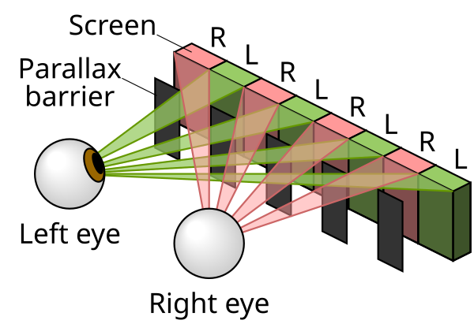

Technology
The Nintendo 3DS is a unique-looking device featuring a folding, clampshell design and dual screens which it inherits from its predecessor, the Nintendo DS. The 3DS, however, includes some interesting technological features that differentiates the handheld from its predecessor, such as an autostereoscopic 3D display.
3D Display

Perhaps the most notable and iconic technology the 3DS features is its top screen that can display autostereoscopic 3D images.
Stereoscopy is a technique that makes two-dimensional images appear to have 3-dimensional depth. Humans percieve depth by averaging the vision from both of their eyes. Stereoscopic is based on this principle and achieves the illusion of depth by showing a viewer two similar images that that are taken from slightly different perspectives. To view a 3D stereoscopic image, the viewer usually needs to use a special 3D-viewing device, such as a stereoscope or a special pair of glasses, so that each image (one for the left eye, one for the right eye) is directed only to the eye that it is intended for.
Autostereoscopy, the technique employed by the Nintendo 3DS, achieves stereoscopic 3D images without the need for using special glasses or headgear. This technique is also called "glasses-free 3D" or "glassesless 3D". The top LCD screen on the Nintendo 3DS uses a parallax barrier to filter two images to each of the player's eyes and create the illusion of an image with depth.
According to How Stuff Works,
The secret of the 3-D power lies in the parallax barrier. The 3DS screen has a special layer on top of it that helps direct light in a particular way. The layer is a second liquid crystal display (LCD) in which the crystals can create barriers that channel light. When you turn the 3-D mode off on the 3DS, the crystals allow light to pass through freely so that both eyes receive the same image. By moving the switch up, the 3DS adjusts the placement and width of the crystals in the parallax barrier, sending a different set of images to each of your eyes.
One challenge to this implementation of 3D images, however, is that the viewer must be positioned in a "sweet spot" in front of the screen so that the two images are properly directed towards the correct eye. This ideal viewing angle is limited, meaning the viewer has to stay in one spot in order to see the 3D image.
The 3D technology on the 3DS ended up being regarded as more of a novelty feature due to its limitations and the lack of games that made use of it. Though the feature never quite caught on and never made its way to subsequent consoles, it is still without a doubt impressive that Nintendo managed to develop glasses-free technology and incorporate it into a handheld video game console.
Citations
Sources
- "Nintendo 3DS" (Wikipedia) - https://en.wikipedia.org/wiki/Nintendo_3DS#
- "Stereoscopy: the birth of 3D technology" (Google Arts & Culture) - https://artsandculture.google.com/story/stereoscopy-the-birth-of-3d-technology-the-royal-society/pwWRTNS-hqDN5g?hl=en
- "3-D" (Britannica) - https://www.britannica.com/technology/3-D
- "Autostereoscopy" (Wikipedia) - https://en.wikipedia.org/wiki/Autostereoscopy
- "How the Nintendo 3DS Works" (How Stuff Works) - https://electronics.howstuffworks.com/nintendo-3ds.htm#pt5
Images
- Hero Image - https://archive.nytimes.com/www.nytimes.com/interactive/2012/11/15/business/a-look-inside-the-nintendo-3ds-xl.html
- Parallax Barrier Diagram - https://commons.wikimedia.org/wiki/File:Parallax_barrier_vs_lenticular_screen.svg
{kind=link}
Video
- "How 3D on the 3DS Works" (Jeff Grubb's Game Mess, Youtube) - https://youtu.be/85DcIyq9H-s?si=KzNkK4CyLalo9wrl